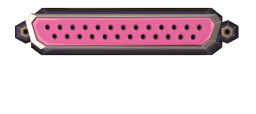
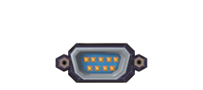
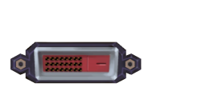
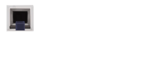

Glossary
* Common abbreviations
General Terms:
- DBML: Demand-Based Mod Loading
- DMG: Dynamic Mission Generator
- EFM: experting for myself
- KTANE/KTaNE/KT&NE: Keep Talking and Nobody Explodes
- LSD: least significant digit (same as modulo 10)
- LTP: looking to play
- MSD: most significant digit
- PR: pull request
- SN/S#: serial number
- TFKE: The Full KTaNE Experience, a collection on the Steam Workshop containing all playable modules and a bunch of useful tool mods.
- TP: Twitch Plays: KTANE
Modules:
- 100LOD: 100 Levels of Defusal
- 15ML: 15 Mystic Lights
- 4CM: Four-Card Monte
- 7C4/SCF: Seven Choose Four
- 7DS/SDS: Seven Deadly Sins
- BA/BamA: Bamboozled Again
- BB: Bamboozling Button
- BBG: Bamboozling Button Grid
- BC: Big Circle
- BF: Brainf---
- BH: Black Hole
- BTK: Bamboozling Time Keeper
- BVD: Boolean Venn Diagram
- CDO: Cursed Double-Oh
- CDR: Cruel Digital Root
- CGK: Cruel Garfield Kart
- CGOL/GOLC: Game of Life Cruel
- CPK: Cruel Piano Keys
- CS: Character Shift
- DE: Double Expert
- DOMT: The Deck of Many Things
- DR: Digital Root
- EB: Encryption Bingo
- EM: Encrypted Morse
- FE: Forget Everything
- FER: Foreign Exchange Rates
- FI: Forget Infinity
- FIN: Forget It Not
- FML: Forget Me Later
- FMN: Forget Me Not
- FMW: Forget Me Now
- FN/FEN: Forget Enigma
- FOV: Forget Our Voices
- FP: Forget Perspective
- FT: Forget This
- FTA: Forget Them All
- FTC: Forget The Colors
- FTL: Follow the Leader
- FUN: Forget Us Not
- GD: Geometry Dash
- GOL: Game of Life
- HBN: Hereditary Base Notation
- KYW: Know Your Way
- LC: Lousy Chess
- MAH: Modules Against Humanity
- MM: Mystery Module
- MTC: Monsplode Trading Cards
- OOO: Odd One Out
- RAM: Random Access Memory
- RCL: Railway Cargo Loading
- RP: Robot Programming
- RPN: Reverse Polish Notation
- RPSLS: Rock-Paper-Scissors-Lizard-Spock
- SF: Simon Forgets
- SS: Simon’s Stages
- STD: Spot the Difference
- SUS: Simon’s Ultimate Showdown
- TBCC: Ten-Button Color Code
- TIE: Timing is Everything
- TK: The Time Keeper
- TTK: Turn The Key
- TTKS: Turn The Keys
- TTT: Tic Tac Toe
- TVAB: The Very Annoying Button
- UCN: Ultimate Custom Night
- UTTT: Ultimate Tic Tac Toe
- WGC: Wolf, Goat, and Cabbage
- WOF: Who’s on First
Additive color mixing
One of the two major color systems commonly used in KTANE modules.
Each color has 3 components: A red, a green, and a blue component. This makes red, green, and blue the primary colors for additive coloring.
When green and blue are combined, you get cyan.
When red and blue are combined, you get magenta.
When red and green are combined, you get yellow.
This makes cyan, magenta, and yellow the secondary colors for additive coloring.
When all of the components are used (i.e., a combination of red, green, and blue), you get white.
When none of the components are used you get black.
The 3 components do not have to be only “on” or “off”. For example, Odd One Out uses varying intensities, giving rise to 27 different colors instead of just 8.
Alarm alarm clock
A loud sound that obstructs the defuser’s ability to communicate with the expert(s) until the alarm is silenced by pressing the “Snooze” button. The alarm turns itself off on its own after a while.
This is one of the pacing events.
Appendix
- In the vanilla manual: a set of pages near the end of the manual that describe how to read the widgets. Several manual pages for modules refer to these.
- In the world of mods, an appendix is an additional page that is still part of the manual for a specific module, but not strictly required for solving it. These usually describe concepts in greater detail that may be unfamiliar to some readers, for example logic operators, lists of numbers such as prime numbers, rules of color mixing, etc.
Battery
An object that appears in battery holders on the side of the bomb casing and is thus part of edgework. There are two types of batteries: AA batteries and D batteries.
- — a battery holder with a D battery in it
- — a battery holder with 2 AA batteries in it
Defusers often read out the number of batteries and battery holders instead of the number of AA batteries and the number of D batteries. Experts can deduce the number of AA batteries and D batteries from this information:
- If there are 4 batteries in 2 holders, all of them must be AA batteries.
- If there are 2 batteries in 2 holders, all of them must be D batteries.
- If there are 3 batteries in 2 holders, there must be 2 AA batteries and 1 D battery.
In general, if there are b batteries and h battery holders, then:
- the number of AA batteries is 2(b − h), and
- the number of D batteries is 2h − b.
The mod Multiple Widgets subverts the above assumptions by introducing battery holders that can contain between 0 and 4 batteries each.
Battery holder
A widget that contains batteries.
In the vanilla game, a battery holder can only contain a single D battery or 2 AA batteries.
The mod Multiple Widgets introduces battery holders that can contain between 0 and 4 batteries each.
Bomb
Can refer to:
- A game object containing a number of modules and a ticking timer. All regular modules on the bomb must be solved to defuse the bomb. Normally the bomb is operated by the defuser and isn’t supposed to be seen by the expert(s).
- A mission.
- A bomb casing.
Bomb casing
The shape of the bomb, which dictates the number of modules that can be played on it.
In the vanilla game, there is only one bomb casing with 11 module slots.
With mods, different bomb casings exist that have different shapes and colors, different numbers of slots for modules, and different locations for the widgets.
Bomb Creator
A modded holdable (subscribe here) that functions similarly to the Free Play case, containing more options for customizability.
In particular, it enables access to functions of Multiple Bombs and Factory such as infinite bombs (used in endurance play).
It also allows you to set the rule seed.
Boss module
A module (typically having the quirks SolvesAtEnd or NeedsOtherSolves) that may present or generate new information needed for solving it when other non-ignored modules are solved or may require interaction between module solves.
These modules use ignore lists to make sure that multiple boss modules can work on the same bomb without all waiting on each other, which would make the bomb unsolvable.
Make sure to be subscribed to the Boss Module Manager to ensure the ignore lists for these modules are up-to-date.
The following are some of the more well-known modules that require all other modules to be solved first (except for other boss modules). This list is not exhaustive.
The following are some of the modules that require some other modules to be solved first but usually not all of them:
Furthermore, there are a few modules that are not themselves boss modules, but are skipped over by boss modules due to their heavy dependence on the bomb’s timer. These include:
For an exhaustive list of boss modules, see ❖ List of Boss Modules.
Brochure
An item on the desk in the setup room, labelled “MODS”, that allows access to:
- the Mod Manager;
- the local folder containing the mod settings;
- the “mod manual”, an automatically generated PDF containing the manuals for all the installed modded modules. Serious players do not use this as a large PDF with hundreds of pages is unwieldy to use. Instead, the Repository of Manual Pages provides direct access to each module’s manuals with a search function.
Cardinal directions
A common way to communicate directions (or locations in a grid-like arrangement) that relies on the markings of a compass rose. In this nomenclature, “north” means “up”, “east” means “right”, etc.
Contrasting with clockface directions:
- This method is especially useful when angles of 45° are involved. For example, in Semaphore, “north-east” is an accurate direction, while using either “1 o’clock” or “2 o’clock” can cause confusion.
- This method is not prefix-safe, as there are some directions (e.g., “north”) that are a prefix of others (e.g. “north-east”). As a result, an expert saying “north-east” may be misunderstood as having said “north” for a variety of reasons (voice cutting out, hesitation, stuttering, etc.).
Centurion
A mod (subscribe here) created in mid-2017 to celebrate the first 100 modded modules, consisting of:
- a bomb casing with 101 module slots;
- a difficult mission containing the first 99 modded regular modules, one regular vanilla and one needy.
Challenge
Aside from the usual meaning of “challenge” in English, this may refer to:
-
(also: special challenge) A gameplay mode which is specially constrained to add additional challenge to the game. Some such challenges include:
-
An infamously challenging mission, for example:
- A manual challenge.
Clockface directions
A common way to communicate directions (or locations in a circular arrangement) that relies on the position of numbers on the dial of an analog clock. In this nomenclature, “12” means “up”, “3” means “right”, etc.
Contrasting with cardinal directions:
- This method is especially useful when angles of 30° or 60° are involved. For example, in Hexamaze, “2 o’clock” is a more accurate direction than “north-east”.
- This method is prefix-safe as no clockface direction is a prefix of any other.
Clown Car
A special gameplay challenge in which two or more defusers, playing separate bombs, use the same voice channel and potentially share experts.
This is one of the special challenges.
Colorblind mode
- A setting which some modules have so that they can be playable for defusers who are colorblind. This is usually achieved by having letters or words near objects on the module whose color is important to solve the module.
- The Colorblind Helper mod can be used to directly toggle this setting for the modules that support it.
Competitive Mode
A mod (subscribe here) that allows multiple defusers to experience the exact same bomb (same modules with the same puzzles on them).
This allows for teams to race against each other on a level playing field. Without it, a team may get lucky by receiving easier puzzles on some modules than the other team.
Countdown timer
See timer.
Defuse disarm solve
- to successfully complete (a bomb) by solving all regular modules on it before the timer runs out.
- (uncommon) to solve (a regular module).
Defuser
The player who holds the bomb but cannot see the manual.
Contrast with expert.
See also experting for myself.
Defuser profile veto profile
A type of profile in Mod Selector that allows the user to veto (disable) specific modules, widgets, bomb casings or services.
Usually used to exclude modules the defuser chooses not to play.
Contrast with expert profile. Defuser profiles take precedence over expert profiles.
Demand-Based Mod Loading
A feature in the Tweaks mod which makes it possible for the game to not have to load every module when first loading the game, instead increasing the loading time when starting a bomb.
To enable this feature:
- Load up the game, but use the in-game Mod Manager to disable mods with modules. Make sure that the Mod Selector and Tweaks mods are enabled.
- Open the Mod Selector tablet, go to Settings (the gear app), then go to Tweaks, scroll down to the bottom and enable both “Demand-Based Mod Loading” and “Disable Demand-Based Mods”.
- After enabling these two options the Tweaks mod will give you directions on how to proceed.
Diffuse
Digital root
A mathematical operation used by some modules. The digital root of an integer can be calculated one of two ways:
- Take the sum of the digits that make up the number. Then keep repeating that until you get a result that is only a single digit.
- Subtract 1 from the number, take it modulo 9, then add 1.
- 0 is the only number whose digital root is 0.
- The digital root for all other numbers is between 1 and 9.
- The digital root doesn’t change if you remove 9s from the number. Therefore, you can make your calculation easier by removing all the 9s as well as any groups of digits that add up to 9 (e.g., 4 and 5). However, if you end up removing all digits in this manner, the answer is still 9, not 0.
Disarm
- to defuse (a bomb).
- to solve (a regular module).
Dynamic Mission Generator
A mod (subscribe here) which can be used to easily create custom bomb configurations in-game.
This mod requires the Mod Selector to also be installed, because it uses the same tablet on the front desk.
Despite the name, Dynamic Mission Generator does not create missions that can be listed in the missions binder.
Edgework
The widgets plus the serial number on any particular bomb. This usually consists of batteries, indicators, ports, and the serial number. If modded widgets are used (for example, Two Factor), it includes all of those as well.
Elevator elevator room
A gameplay room that is technically included in the vanilla game but has some special status:
- Without mods, this gameplay room is only accessible using VR (virtual reality).
- The Camera Mover mod allows access to this gameplay room in regular play.
- This gameplay room can also be played in Twitch Plays: KTANE.
Empty port plate
A port plate without any ports:
Endurance
A mode of open-ended gameplay in which a (potentially unbounded) series of bombs is played until one explodes.
This requires four mods to be installed: Factory, Bomb Creator, Multiple Bombs, and Tweaks.
The setup is as follows:
- Time mode is enabled. This way, solving modules replenishes time on the timer.
- In Bomb Creator, the Factory mode is set to “∞ + global time”. This means a new bomb appears after one is defused, but any penalty resulting from strikes (lost time and reduced multiplier) will carry across to the next bomb.
Expert
The player who reads the manual but cannot see the bomb.
Contrast with defuser.
See also experting for myself.
Experting for myself EFM
Assuming the defuser and expert role simultaneously by looking at both the bomb and the manual.
Despite not being in the original spirit of the game because it removes the communication aspect of the game, it has appeal because you still have to solve the puzzles on the modules within the time of the bomb.
Not to be confused with soloing.
Expert profile
A type of profile in Mod Selector that is used to include modules.
Usually used to include the modules a particular expert chooses to play.
Contrast with defuser profile. Defuser profiles take precedence over expert profiles.
Explode detonate blow up
When a bomb explodes, the players have lost the game. There are two reasons a bomb might explode. The binder that appears on the screen after the explosion describes the “Reason for Explosion”:
- If it says “Time Ran Out”, the bomb’s timer ran out before the team has solved all regular modules on the bomb.
- Otherwise, it will show the name of a module. The bomb exploded because the maximum number of strikes has been reached by making mistakes, and the most recent strike (the one that finally set off the explosion) was caused by a mistake on the module shown. Note that this could be a module you weren’t directly interacting with, especially if it’s a needy module. For the vast majority of modules, you can find information about your mistake in the logfile.
Factory
A gameplay room (subscribe here) that provides additional gaming functionality on top of what the vanilla game provides, most notably the ability to play several bombs in sequence (a new bomb appears when one is disarmed). This also requires the Multiple Bombs mod and the Bomb Creator.
Free Play case
A holdable in the setup room that allows the defuser to run a bomb with a desired amount of regular modules and time as well as the option to enable and disable needy modules and/or hardcore mode.
The Bomb Creator is a replacement that provides greater control and more options/settings.
Gameplay room
GitHub
A website that hosts repositories.
Hardcore
A mode of gameplay in which there is only one strike (thus allowing no mistakes).
Highlighter
A feature on the Repository of Manual Pages that allows the user to highlight list items and table columns/rows in HTML manuals using keyboard-mouse combos:
| Highlight a table column | Ctrl+Click (Windows) Command+Click (Mac) |
|---|---|
| Highlight a table row | Shift+Click |
| Highlight a table cell or an item in a list | Alt+Click (Windows) Ctrl+Shift+Click (Windows) Command+Shift+Click (Mac) |
| Change highlighter color | Alt+1, Alt+2, Alt+3, Alt+4 |
| Enable/disable the highlighter | Shift+T |
Holdable
An object in the setup room provided by a mod. Common examples include Mod Selector and Bomb Creator.
The Free Play case, the missions binder and the brochure can also be seen as holdables, but they’re provided by the vanilla game, not a mod.
Indicator
A widget on the side of the bomb casing which has a label and either a lit or unlit LED.
- — lit indicator
- — unlit indicator
The vanilla game uses only 11 indicator labels (BOB, CAR, CLR, FRK, FRQ, IND, MSA, NSA, SIG, SND, and TRN).
Interactive
A measure of how much back-and-forth communication is required between a defuser and expert to solve a module.
A particularly interactive module is one in which the expert must repeatedly ask the defuser for information on the module.
Typical examples of particularly interactive modules include:
- Gridlock, where the expert needs to repeatedly ask for pieces of information, as there is too much information to read out all of it;
- Horrible Memory, where every button press produces new information that must be provided to the expert;
- Microcontroller, where the defuser has to ask the expert for pieces of the solution at a time.
An interactive module ties up the defuser’s attention, which means a defuser can usually only do one interactive module at a time.
By contrast, a non-interactive module is one where the defuser can read out all information from the module to the expert, after which the expert will work on their own to obtain the solution, and then finally relay the solution back to the defuser. An example of a particularly non-interactive module is Radiator, which doesn’t even require any information to be read out, as the solution depends solely on edgework.
A common strategy is for the defuser to allocate several non-interactive modules to all experts but one and then play an interactive module with the remaining expert while the others work on their solutions.
Jam
Short name for a modding jam.
Leaderboard
There are two separate types of leaderboards:
- The game maintains leaderboards for every mission, including modded ones. These leaderboards contain the Steam account name of the defuser, and the scores are the best times remaining on the bomb.
- Twitch Plays: KTANE maintains a different kind of leaderboard. These leaderboards contain the Twitch account name of the players, and the scores are point scores accumulated through the solving of regular modules. Each streamer has a separate, independent leaderboard.
Both types of leaderboards are displayed at the end of each bomb.
Logfile
A file that is generated by the game that contains information about the bomb and the modules on it. For the vast majority of modules, it includes the information on the module and the expected solution, thus allowing you to trace your steps and figure out your mistakes if you got strikes.
Use the Logfile Analyzer to read these logfiles more easily.
The logfile accumulates all the bombs you play within a single session of the game. The game starts a new file when it is launched and wipes the old one.
Assuming default installation paths, the logfile can be found here:
| Windows/Steam: | %AppData%\..\LocalLow\Steel Crate Games\Keep Talking and Nobody Explodes\output_log.txt |
|---|---|
| Windows/Oculus: | C:\Program Files (x86)\Oculus\Software\steel-crate-games-keep-talking-and-nobody-explodes\Keep Talking and Nobody Explodes\ktane_Data\output_log.txt |
| Mac: | ~/Library/Logs/Unity/Player.log |
| Linux: | ~/.config/unity3d/Steel Crate Games/Keep Talking and Nobody Explodes/Player.log |
| Steam Deck (Proton): | ~/.steam/steam/steamapps/compatdata/341800/pfx/drive_c/users/steamuser/AppData/LocalLow/Steel Crate Games/Keep Talking and Nobody Explodes/output_log.txt |
The Log Viewer Hotkey mod (subscribe here) can be used to show the logfile in the Logfile Analyzer automatically, the keyboard combination is [Shift] + [F7] by default.
Logfile Analyzer
A powerful feature on the Repository of Manual Pages that displays information contained in a logfile in a graphical and organized manner.
Manual manual page
A document that explains:
- how to solve any particular regular module;
- how to operate a needy module;
- how to read a widget.
Normally manuals are used by the expert(s) and aren’t supposed to be seen by the defuser.
Some manuals may include an appendix.
All modules and widgets have a manual written by their authors. However, other players may have contributed additional modified versions of a manual, either to rephrase the explanations, to reorganize the information more efficiently, or to short-circuit some or all calculations. Such additional manuals can be accessed on the Repository of Manual Pages by clicking the down-pointing arrow that says “MORE”.
There are a few terms loosely applied to describe the various degrees of modification:
- “embellished”: The original manual but with information added.
- Example: Rock-Paper-Scissors-Lizard-Spock embellished manual adds a table row showing which signs beat each sign.
- “reworded”, “reorganized”: Still essentially the same manual, but with the information rearranged or rephrased to aid readability or accessibility.
- Example: Hunting reworded manual rephrases the explanations and makes the symbols bigger. The table is still the same.
- Example: Burglar Alarm rearranged manual rephrases the explanations and transposes the table (rows become columns and vice-versa). The information presented is still the same, just in a different orientation.
- “condensed”: A manual in which the information is severely abbreviated, to the point that it’s usually not readable to players who have not seen the original manual. The intended audience is players who are intimately familiar with the fundamental rules of a module and only need to quickly refer to specific conditions or instructions they haven’t memorized.
- Example: Forget Me Not condensed manual contains only the core calculation rules but leaves out all of the explanation.
- “optimized” or “lookup table”: Some or all of the calculation that the original manual demands of the expert has been pre-computed and the answers directly listed. Such a manual may also remove steps that are found to be unnecessary as they have no effect on the solution.
- Example: Orientation Cube optimized manual absolves the expert entirely from having to mentally perform the namesake three-dimensional cube rotations and reduces solving the module to only determining the applicable edgework condition.
- “interactive”: Provides a web page for the user to enter the module’s information in a grid or some other structure. Although this employs dynamic behavior (like an app), it explicitly does not automatically compute any part of the solution for the user; rather, it is a digital equivalent to a paper template.
- Example: Hexamaze interactive manual simulates a transparent stencil that can be drawn on and then moved/rotated over the manual.
- “automated solver”: Any software that partially or entirely automates the role of the expert. The Repository of Manual Pages does not host any automated solvers.
- Example: An interactive demonstration of Conway's Game of Life can be used to solve the Game of Life Simple module and reduces the expert’s task to entering the puzzle, pressing a button, and reading off the answer.
Opinions on the legitimacy of such modified manuals vary widely between players:
- Some players prefer to play only with the authors’ original manuals, reasoning that they prefer to play a module according to its author’s intended gameplay and that any additional resources not provided by the author may, to some degree, constitute “cheating”. Because of this, modified versions of manuals are sometimes referred to as “cheat sheets”.
- Some players allow embellishments to the original manuals. The logic here is that an expert with a printed copy of the page can scribble additional notes in the margins or elsewhere on the page.
- Some players use any manual available to them, as long as it can be (or could be) printed on reasonable amounts of paper. Similar to the previous point, such a player might argue that, in-universe, an experienced bomb defusal expert can and would print out such a page to improve their success rate and minimize deaths from detonations. Furthermore, such a player may prefer an optimized manual that distills out the module’s intrinsic puzzle and removes extrinsic obfuscations.
- Interactive manuals are often justified on the basis that they simulate what a sufficiently crafty expert can do with physical objects, including cutting paper into shapes or using erasable marker on laminated paper.
- Automated solvers are generally not accepted and are widely considered to negate the entire point in the game.
Modders wishing to create a manual for a new module have multiple options:
- You can modify the manual template in the KTANE modkit. Since you’re already creating a mod, you already have a copy of the modkit.
- You can download the template manual ZIP containing all the necessary files. Just rename and modify the template.
- If you’re adept with git, you can clone the KtaneContent repository from GitHub, take a copy of any existing manual page and modify it. This also allows you to submit your new manual as a pull request to the maintainers of the website.
- To generate a PDF version of your manual, use Google Chrome’s print feature (Ctrl+P). Ensure that the paper format is set to US Letter as that is currently the standard for KTANE manual pages.
Manual challenge
A community challenge in which a mod author publishes a module without a manual. The community examines the behavior of the module and uses data collection and logical deduction to determine the module’s rules and write a manual for it. Once the rules have been figured out in their entirety, the module becomes a normal module with a manual.
Past manual challenges were, in chronological order:
- Point of Order
- Pie
- The Cube
- Spinning Buttons
- Alchemy
- Flavor Text EX
- Digital Cipher
- Stack’em
- Odd One Out
- Green Cipher
- Hyperlink
- Polygons
- Multicolored Switches
- 14
- Dreamcipher
- Audio Morse
- Yes and No
- Etterna
- Integer Trees
- Goofy’s Game
- Puzzword
- int##
- ASCII Maze
- Three Cryptic Steps
- Pocket Planes
- Cosmic
- Validation
- Linq
- X and Y
- Pointless Machines
- Inselectables
- Hypermatch(referred to as 'The Hyper Challenge' before its solve)
- Faerie Fires
- Wumbo
- Wander
- Holographic Memory
- Shapes and Colors
Mission
Missions binder
The holdable in the center of the desk in the setup room, labeled “BOMBS”, allowing the player to launch missions (vanilla or modded).
Mod
A modification to the game that usually involves the addition of new content. Mods are hosted on the Steam Workshop. A mod can contain:
- modules (both regular and needy)
- widgets (for example, Two Factor)
- bomb casings (for example, Centurion)
- missions (for example, Centurion)
- gameplay rooms (for example, Factory)
- setup rooms
- holdables (for example, Mod Selector, Bomb Creator)
- services (for example, Music Manager, Tweaks)
- sound packs
Mod Manager
The game feature that allows users to browse, subscribe to/unsubscribe from, enable and disable mods. If mods are installed, the Mod Manager appears at game startup, but can also be accessed through the brochure in the setup room.
Mod profiles folder
The folder that contains the profiles used by Mod Selector.
To open the folder from within the game, simply click on “Open Mod Profiles Folder” on the Mod Selector. Outside of the game, you can open the folder as follows:
| Windows: | %APPDATA%\..\LocalLow\Steel Crate Games\Keep Talking and Nobody Explodes\ModProfiles |
|---|---|
| Mac: | ~/Library/Application Support/com.steelcrategames.keeptalkingandnobodyexplodes/ModProfiles |
| Linux: | ~/.config/unity3d/Steel Crate Games/Keep Talking and Nobody Explodes/ModProfiles |
| Steam Deck (Proton): | ~/.local/share/Steam/steamapps/compatdata/341800/pfx/drive_c/users/steamuser/AppData/LocalLow/Steel Crate Games/Keep Talking and Nobody Explodes/ModProfiles |
Mod Selector
A modded holdable (subscribe here) that looks like an iPad and sits on the desk in the setup room.
It allows the user, among other things, to enable or disable various gameplay elements:
-
To bring in modules that your experts wish to play, use expert profiles.
Usually each player wishing to play as expert uses the Profile Editor to create their own experting profile and sends it
to the defuser through the
#voice-textchannel. The defuser places the file in their mod profiles folder and then enables it in Mod Selector. - To take out any modules, widgets, bomb casings, gameplay rooms and services that you as the defuser do not wish to use, create and enable a defuser profile. These take precedence over expert profiles.
Mod settings
Many mods have settings that can customize their behavior. For example, modules that involve colors sometimes have a colorblind mode. The brochure provides access to the local folder that contains the files in which the settings can be customized.
Modding jam
A community event in which mod creators are given a set amount of time to develop a module.
First, the community votes on a theme. Then the modding jam is held for a set number of days, and at the end, the community votes on their favorite.
The modding jam themes, along with the submitted modules, are:
- Boozlesnap1st place
- The Tile Maze2nd place
- Logic Chess3rd place
- The Board Walk
- Candy Land & Cruel Candy Land
- Congkak
- Horsey
- Purchasing Properties
- Shashki
- Shogi Identification
- Shut-the-Box
- Sorry Sliders
- Anti-Memory1st place
- Castor & Polluxtied 2nd place
- Double-Ontied 2nd place
- Battle of Wits
- Dual Sequences
- Paperweights
- Parity
- Wave Collapse
- The Midnight Motorist1st place
- Markscript2nd place
- Ribbit Programming3rd place
- Gameboy Cartridge
- (ongoing)
Module
Modulo
A mathematical operation that returns the remainder obtained by dividing two numbers. For example, “13 modulo 5” is 3 because “13 divided by 5” is “2, remainder 3”.
Another way to think of it is to repeatedly add or subtract n until the result is in the range 0 to n − 1. For example, modulo 5 is the same adding/subtracting 5 until the result is in the range 0–4.
Another way to think of it is to consider how far the number is above a multiple of n. For example, “13 modulo 5” is 3 because 13 is 3 more than 10, which is the next lower multiple of 5.
Multiple Bombs
A mod (subscribe here) that allows the player to play multiple bombs at once.
The vanilla gameplay room allows up to two simultaneous bombs. The Portal Gameplay Room allows up to 4. The Factory allows much more, which can be played simultaneously (up to 48) or in sequence (infinite).
Music Manager
A mod (subscribe here) that allows you to customize the background music during the game.
NATO Phonetic Alphabet NATO
An alphabet of code words used to spell words in a way that is unambiguous even when audio is poor.
The following table shows the complete NATO spelling standard, including the digits. However, in the KTANE community, the digits are generally spoken in standard English instead.
| A | Alfa | N | November (sometimes Nancy) | 0 | Zero |
|---|---|---|---|---|---|
| B | Bravo | O | Oscar | 1 | Wun |
| C | Charlie | P | Papa | 2 | Too |
| D | Delta | Q | Quebec | 3 | Tree |
| E | Echo | R | Romeo | 4 | Fow-er |
| F | Foxtrot | S | Sierra (sometimes South) | 5 | Fife |
| G | Golf | T | Tango | 6 | Six |
| H | Hotel | U | Uniform (sometimes Umbrella) | 7 | Seven |
| I | India (sometimes Indigo) | V | Victor | 8 | Ait |
| J | Juliett | W | Whiskey | 9 | Niner |
| K | Kilo | X | X-ray | ||
| L | Lima | Y | Yankee | ||
| M | Mike | Z | Zulu |
Needy module needy
A type of module which cannot be disarmed, but poses a recurrent hazard by periodically awakening and requiring some kind of interaction.
Needy modules cease to pose any danger once all the regular modules on the bomb are solved.
Office
Alternative name for setup room.
Pacing event
An event that occurs randomly during a game to distract the defuser or add challenge to the gameplay. There are two pacing events in the game:
- The alarm
- When the lights in the room go out briefly and everything is dark until they come back on.
The game does not currently have any support for modded pacing events.
Port
Objects which appear on port plates.
In the vanilla game they come in the following varieties:
-  — Parallel
-  — Serial
-  — DVI-D
- — PS/2
-  — RJ-45
- — Stereo RCA
These can only be grouped in specific ways on a port plate:
- — Parallel and serial
- — DVI-D, PS/2, RJ-45 and Stereo RCA
The mod Multiple Widgets adds the following: AC, USB, VGA, PCMCIA, Component Video, Composite Video, and HDMI, and allows all port types to appear together on a port plate.
Port plate
A type of widget which can contain 0–4 ports.
The mod Multiple Widgets adds port plates that can contain up to 13 ports.
Profile
A file which can be created using the Mod Selector or the Profile Editor which is used to choose which modules you would like to play with.
There are two types of profiles: expert profiles and defuser profiles.
Profile bomb
A bomb in which modules are chosen based on the expert's profiles.
These can be generated using the Dynamic Mission Generator by typing the following:
[#]*profile:[1stProfilesName] [#]*profile:[2ndProfilesName] [etc...]
Profile Editor
A feature on the Repository of Manual Pages that allows users to create a profile for Mod Selector.
It is usually used to create expert profiles that indicate which modules a player wishes to include when playing as an expert. The player then downloads this profile (a .json file) and sends it to the defuser through the #voice-text channel on Discord. Finally, the defuser places the file in their mod profiles folder and can then enable or disable that profile in Mod Selector whenever they play with this particular expert.
Profile Revealer
A mod (subscribe here) which can show which modules are enabled in which profiles while you are in a bomb by hovering over the module in question. This is especially useful when playing with expert profiles provided by the experts, so the defuser can find out whose profile includes the module in question.
This mod can also show the name of a particular module. However, turning this feature on disables leaderboards as it provides a kind of help to the defuser that could be seen as putting them at an unfair advantage.
Pseudo-needy
A regular module which poses a recurring hazard in a similar fashion to a needy before it can be solved.
Examples of pseudo-needies include:
Pull request
(Used on GitHub and not directly KTANE-related.) A proposed modification to a repository on GitHub. The repository’s author can choose to accept (“merge”) or reject the suggestion. Since mods are often hosted on GitHub, pull requests are commonly used to add functionality (such as Twitch Plays: KTANE support) to a module. Pull requests can also be used to add new manuals or other files or functionality to the Repository of Manual Pages.
Quirks
Some modules have special properties or characteristics (quirks) that change the way or order in which modules must be solved. Some modules also interact with or depend on other modules in order to be solved.
List of possible quirks:
- Solves at end: The module is only solvable after ALL non-ignored* modules are solved (at the end of the bomb). In general, bosses have this quirk and all bosses should ignore modules with this quirk. (Example: Forget Me Not)
- Needs other solves: The module cannot be solved until some, but not necessarily all, other non-ignored* regular modules are solved first. In general, semi-bosses ignore modules with this quirk and often have this quirk. (Example: Divided Squares)
- Must solve before some: The module must be solved before some other non-ignored* modules. In general, all modules with this quirk should ignore each other. (Example: Turn The Keys)
- May solve with others: The module may disarm itself immediately in response to another module being solved. (Example: Castor and Pollux)
- Will solve suddenly: The module will suddenly present a small window of time in which it will solve even if the solution is incorrect or if strikes are generated. (Example: The Heart)
- Pseudo-needy: The module poses a recurring hazard in a similar fashion to a needy before it can be solved. (Example: The Swan)
- Heavily time-dependent: The module has very precise timing requirements or can only be solved at an exact time. (Example: Turn The Key)
- Needs immediate attention: The module must be solved, or is considerably easier to solve, within a short window of time at bomb start. (Example: Tax Returns)
- Instant death: The module may in some circumstances end the bomb abruptly, for example by immediately detonating the bomb or by exiting the whole game. (Example: Monsplode, Fight!)
*Modules that have some of these quirks often will ignore each other using ignore lists to make sure that multiple quirky modules can work on the same bomb without all waiting on each other, which would make the bomb unsolvable.
Regular module solvable module
A module that must be solved to defuse the bomb.
See also: boss module, needy module.
Repository repo
Can refer to two different things:
- The Repository of Manual Pages
- A specific repository on GitHub containing the source for a KTANE mod. Most mods are open-source and hosted there.
Repository of Manual Pages
A website that hosts all manuals for KTANE modules and widgets as well as the Profile Editor and the Logfile Analyzer.
Changes to this can be proposed using pull requests as these are hosted on GitHub:
- KtaneContent - Contains all manuals, the Profile Editor, Logfile Analyzer and other static files hosted on the server
- KtaneWeb - Contains the C# code that runs the website.
Rule seed
A number used to dynamically vary the manuals and rules of modules.
This requires the Rule Seed Modifier (subscribe here).
To see this in action, compare these two versions of the Password manual:
- standard Password manual (shows the familiar words)
- Password manual with rule seed 2 (same puzzle, but with different words)
The defuser and experts must agree on the rule seed. The players can either manually enter a desired number in Bomb Creator, or have Bomb Creator choose a number at random by holding the “S” button for several seconds.
The expert must use the correct manual using the same rule seed as the defuser. The Repository of Manual Pages allows the user to enter the rule seed and be linked to all the right manuals.
All vanilla regular modules as well as Needy Knob support this, as well as a growing number of modded modules.
The default rule seed is 1. Using this rule seed will provide all the familiar “standard” rules.
Seed
A number used to:
- dynamically vary the rules of modules — see rule seed;
- allow multiple users to experience the same bomb (same modules with the same puzzles on them) — see Competitive Mode.
Generally, in computer programming, “seed” refers to a number that can kick off a random-number generator in such a way that it will reliably generate the same random numbers each time it is run off of the same seed.
Serial number
A code of letters and numbers on the side of the bomb casing. Most modules have rules/conditions that depend on this serial number.
The serial number has a few fixed properties:
- It is always six characters that are either a letter A–Z or a digit 0–9.
- The third and sixth characters are always digits.
- The fourth and fifth are always letters.
- In the vanilla game, the letters O and Y do not occur. The digit 0 (zero), however, does. At the time of writing, all modules consider Y to be a consonant, not a vowel, except for Cooking which has a footnote specifically to say this.
- The digit 0 (zero) is an even number.
Service
A mod that modifies the game behavior in a way other than adding modules, widgets, bomb casings, gameplay rooms, setup rooms, sound packs or holdables. Well-known service mods include Multiple Bombs, Tweaks, and Music Manager.
Factory, while usually perceived solely as a gameplay room, technically also includes a service to allow it to interface with Multiple Bombs and Bomb Creator.
Setup room office
The room that appears when the game starts and is not in an ongoing bomb.
In the vanilla game, the setup room contains the following items:
- the missions binder, allowing the user to launch a mission;
- the brochure, providing a gateway into the world of mods;
- the Free Play case, allowing the user to customize the number of modules, strikes and the starting time on the timer;
- a folder containing options to set sound/music volume, screen resolution, and to exit the game.
Additional items used in the setup room by almost all modded players include:
- the Bomb Creator, an advanced version of the Free Play case;
- the Mod Selector, allowing players to enable/disable specific modules, widgets, gameplay rooms and services through the use of profiles.
In the vanilla game, the setup room looks like an office. Several mods provide alternative setup rooms.
Shadow
To work (as an expert) to solve a regular module while another expert is already working on the same module.
Used as a verb, for example: “I’ll shadow you on Adjacent Letters.”
This is sometimes done in a case where all other modules on the bomb have been solved, so there is no other work left to do.
If time on the bomb is short, the shadowing expert might find the solution quicker, allowing the bomb to be defused in time. If there are no strikes left to give, the shadowing expert provides a verification to increase confidence in the correctness of the solution.
Solo
To solve (a regular module) from memory while playing the defuser role.
Used as a verb, for example: “I soloed Anagrams.” “Dude, he can solo Tax Returns, it’s sick!”
Not to be confused with experting for myself.
Solve defuse disarm
- to successfully complete (a regular module). The completion of a regular module is usually indicated by the status light.
- to defuse (a bomb).
Solved module
A regular module on the bomb that has already been solved.
Some module manuals refer to the number of solved modules (or unsolved modules) as part of their calculations/rules.
Sound pack
A mod that modifies the sounds used in the game; in particular, the strike sound, the bomb explosion sound, the alarm sound and others.
This does not include the background music in the game; see Music Manager for that.
Status light
A small bulb or LED on a regular module, usually in the top-right corner.
This light starts out dark gray to indicate the module is not yet solved. Once it is solved, the light turns bright green.
When a module registers a strike, it briefly flashes up red.
There are a few modded modules that subvert this standard behavior. Some modules have the status light in a different corner than the top-right, while others may use different colors/states to indicate whether they are solved or unsolved.
Steady mode
A gameplay mode (available through Tweaks) in which the timer does not speed up when a strike is earned; instead, a fixed amount of time (usually 2 minutes) is deducted from the remaining time.
This mode is widely considered to be more suitable for long defusing sessions with very large bombs and/or particularly challenging missions.
Steam Workshop Workshop
The website where all the mods are hosted and can be subscribed to.
When a modder creates a new mod, often they might upload it to the Workshop but keep it marked as friends-only so that members of the community can playtest it before it goes public. In such a case, make sure you are logged in to the website with your Steam identity to subscribe to such a non-public mod.
Strike
Refers to:
-
A mistake made while attempting a module.
When it occurs, a strike usually produces a sharp buzzing sound and a red flashing of the status light.
Strikes already registered are represented by a red, X-like symbol above the timer. However, this only shows up to two strikes, so you can’t tell whether you already have two or more than two strikes.
If you are unsure why you received a strike, for the vast majority of modules, you can find information about your mistake in the logfile.
Some modules require the number of registered strikes as part of their calculations/rules.
A strike can speed up the timer.
-
The number of mistakes that will cause the bomb to explode. In standard gameplay, this is usually 3, although some missions reduce it to 1 (see hardcore), while the Bomb Creator allows players to set it to any number.
Time mode
A gameplay mode (available through Tweaks) in which the timer is modified in two ways:
- When a strike is earned, the timer does not speed up; instead, a fixed proportion of the remaining time (usually 25%) is deducted.
- When a regular module is solved, additional time is added to the timer. The amount of time depends on the difficulty of the module solved. This way, time lost from strikes can be regained.
- There is a “multiplier” value. With a high multiplier, the amount of time earned from solved modules is higher. The multiplier starts out high, but a strike reduces this value drastically, while a solved module only increases it slightly. This way, strikes are still very costly and the challenge of solving modules reliably is maintained.
This mode is widely considered to be more suitable (even essential) to playing endurance.
See also: steady mode, Zen mode.
Timer countdown timer
The ticking countdown on the bomb that determines how much time remains to defuse the bomb before it will explode.
Some modules require a specific action (such as tapping or releasing a button) when the countdown timer has specific digits in it or fulfills some other condition.
Above the timer, a small display shows up to two strikes already registered in the form of small X-like symbols.
The timer speeds up depending on the number of strikes already registered:
- 1 strike: 1.25× speedup (so 1 timer second is now 0.8 actual seconds)
- 2 strikes: 1.5× speedup (so 1 timer second is now 0.67 actual seconds)
- 3 strikes: 1.75× speedup (so 1 timer second is now 0.57 actual seconds)
- ≥ 4 strikes: 2× speedup (so 1 timer second is now 0.5 actual seconds)
Tweaks
A mod (subscribe here) that provides assorted functionality:
- Better Case Picker: ensures you don’t get a super huge bomb casing when you’re only playing a small number of modules.
- HUD: A display in the corner of the screen showing the timer, number of strikes and other information.
- Edgework display: A display at the top of the screen showing the edgework in text form.
- Steady mode, time mode and Zen mode.
- Applies minor fixes to certain modded modules whose authors are no longer reachable to fix the modules directly.
Twitch Plays: KTANE Twitch Plays TP
A way of playing Keep Talking and Nobody Explodes on a Twitch stream by issuing commands through the chat, which are automatically executed by the software rather than a human.
To find popular streams running Twitch Plays: KTANE, you can join the Twitch Plays: KTANE Discord server.
Players are awarded point scores for solving regular modules and maintaining needies, giving rise to a leaderboard.
If you wish to run such a stream of your own, subscribe to the mod, or obtain a copy from the latest build page on GitHub.
Two Factor
A modded widget (subscribe here) which displays a 6-digit number that changes every minute. Very few modules make use of it.
Unicorn
A rule in a manual which can make a module effortless to solve but occurs very rarely.
Unsolved module
A regular module on the bomb that has not yet been solved.
Some module manuals refer to the number of unsolved modules as part of their calculations/rules.
Vanilla
Refers to:
- The base game without any mods installed or enabled. The base game contains 11 regular modules, 3 needy modules and a fair amount of missions.
- A style of play in which only vanilla (unmodded) modules are used, even if mods such as bomb casings or Bomb Creator are used to increase the number of modules, widgets or strikes.
Veto profile
Alternate name for a defuser profile.
Voice bomb
A bomb being defused with defusers and experts communicating with each other, the way the game was intended to be played.
Contrast with experting for myself.
Whitelist
A type of Twitch Plays stream where all the players who can control the bomb have been selected prior to playing on the streams. Generally, whitelist players frequently participate in Twitch Plays streams and are very good at the game. Most challenge bombs are attempted when the stream is a whitelist stream. If you wish to apply to potentially participate in whitelist streams you can do so on the Twitch Plays Discord server.
Widget
Anything that appears on the bomb casing, with the exception of the serial number; affects most modules. The vanilla game always places 5 widgets on a bomb, but this can be changed using Bomb Creator.
The 3 types of widgets in the vanilla game are:
Workshop
Short for Steam Workshop.
Yes/no challenge
A special gameplay challenge in which one player (usually the defuser) is only allowed to say “yes” or “no”, so the other player (usually the expert) has to strategically ask the right questions to extract information.
This is one of the special challenges.
Zen mode
A gameplay mode (available through Tweaks) in which the time on the timer runs up instead of down. This way, the bomb will never explode due to time running out.
When used in Twitch Plays: KTANE, this mode also drastically reduces the point score earned for solving a regular module.
See also: steady mode, time mode.